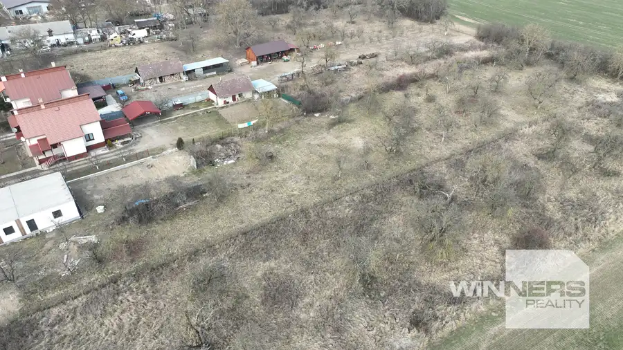
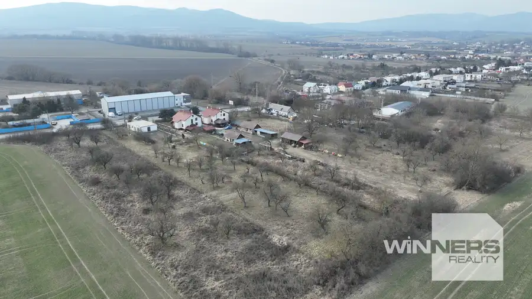

Na predaj stavebný pozemok v Sečovciach
Sečovce



- Plocha4240 m²
- VlastníctvoOsobné
O nehnuteľnosti
Ponúkame na predaj atraktívny stavebný pozemok o celkovej výmere 4240 m². Je rozdelený na 6 stavebných parciel, každá o rozlohe cca 600- 630 m².K parcelám prislúcha aj pozemok určený na prístupovú cestu. Pozemok sa nachádza v rovinatom teréne, čo poskytuje vhodné podmienky na výstavbu.V súčasnosti na pozemku nie sú inžinierske siete, čo však otvára možnosti prispôsobenia konkrétnym potrebám investoraTento pozemok je určený na predaj ako celok, čo je ideálnou príležitosťou pre developerské projekty. Vhodné pre výstavbu rodinných domov, bytových jednotiek alebo iných komerčných a rezidenčných projektov. Videoobhliadka : https://www.youtube.com/watch?v=iITdJzyiv98Cena : 23eur/m2 Platba v hotovosti, alebo prostredníctvom hypotekárneho úveru (pomôžeme Vám s jeho vybavením)V prípade záujmu ma kontaktujte : 0918 781 908 mail: tatiana.ferjova@winnersgroup.skTáto inzercia nie je verejnou ponukou na uzavretie zmluvy. Vlastník si vyhradzuje právo voľby o tom, komu a za akých dojednaných podmienok prevedie svoje vlastnícke právo. Pri tejto ponuke je možné licitovať kúpnu cenu podľa všeobecných podmienok licitácie v sieti Winners reality uverejnených na: www.winnersreality.sk/licitacia.
Parametre
- Druh
- Pozemok pre rodinné domy
- Dátum zverejnenia
- 05. 03. 2025
- Plocha pozemku
- 4240 m²
- Typ
- Predaj
- Vlastníctvo
- Osobné